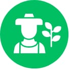

Agro é pop, agro é tech, agro é tudo
“Agro is pop, agro is tech, agro is everything”
Nationwide advertising campaign by Globo TV
Although originally created as an advertising slogan, this statement reflects the importance of agriculture in Brazil. The sector accounts for 21% of the country's GDP, 20% of all jobs, and 43.2% of national exports. It is supported not only by large-scale commodity production but also by family farming, which represents 77% of all agricultural establishments and is essential for employment and domestic food production.
Main open conflicts
texto texto texto
texto texto texto
texto texto texto
How could science help?
“A practical and fast biosensor would already be a major advance in controlling 2,4-D drift.”
“A biosensor would be a valuable tool for monitoring and decision-making in real-world agricultural settings.”
To address this challenge, we developed 2,4Detector, an integrated ecosystem combining synthetic biology, accessible hardware, and digital tools for fast, accurate, and affordable 2,4-D detection, from contamination suspicion to evidence collection.
Mission & Values

Farmer-centered design
Every component of 2,4Detector was developed with usability, affordability, and accessibility in mind, ensuring that the technology can be adopted by the people who need it most.
Fast, accurate, and accessible detection
We optimized the biological system to deliver reliable results while keeping the assay rapid, low-cost, and suitable for field deployment.
Science with local impact
Our goal extends beyond detecting 2,4-D. We aim to empower communities by transforming synthetic biology into a practical tool that supports informed decision-making and collective responsibility.
Interdisciplinary innovation
2,4Detector was built by a multidisciplinary, women-led team, bringing together expertise from biotechnology, engineering, design, software development, and human-centered communication.
Knowledge as part of the solution
Technology alone is not enough. By combining biosensing with education, outreach, and community engagement, we seek to promote a culture of responsible herbicide use and strengthen dialogue among all stakeholders.